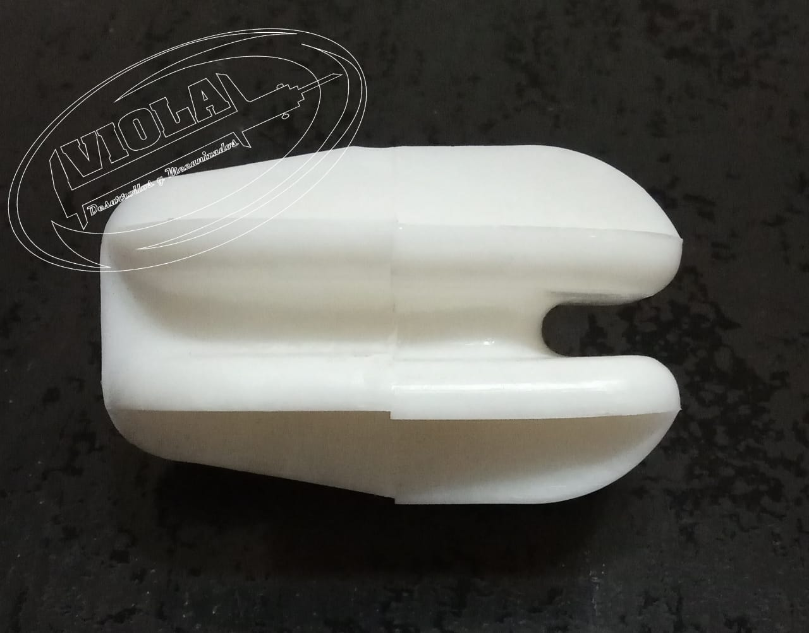
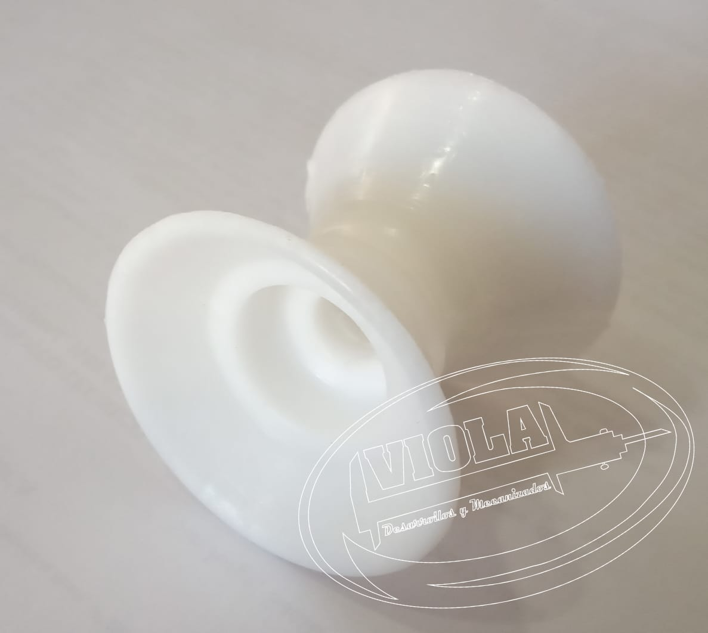
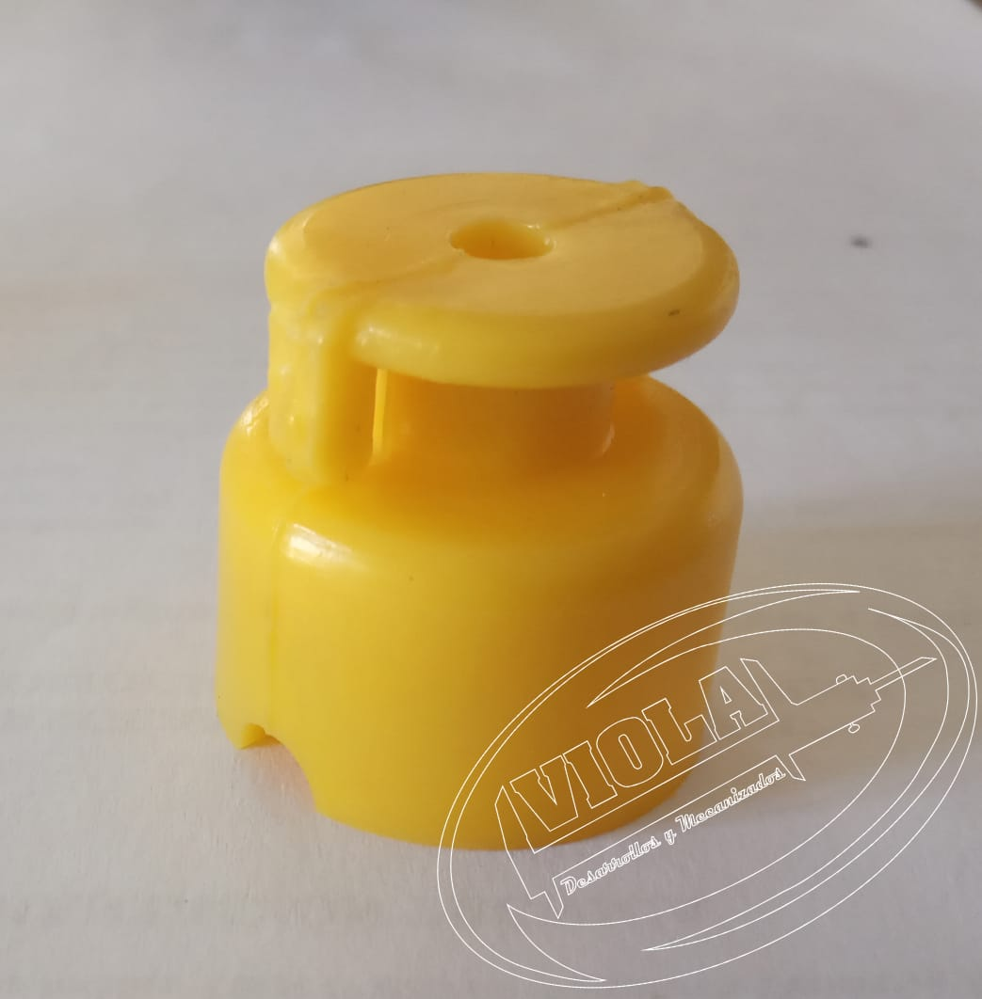

Aislador para boyero Roldana
El aislador es fabricado con Polietileno de Alta Densidad con Inhibidor UV, color blanco.
De fácil instalación, apto para cableado y maneado.
Posee una adecuada resistencia para soportar la tensión de estirado del alambre y ha demostrado aptitud para su uso a la intemperie, funadamentalmente a la exposición a los Rayos UV.